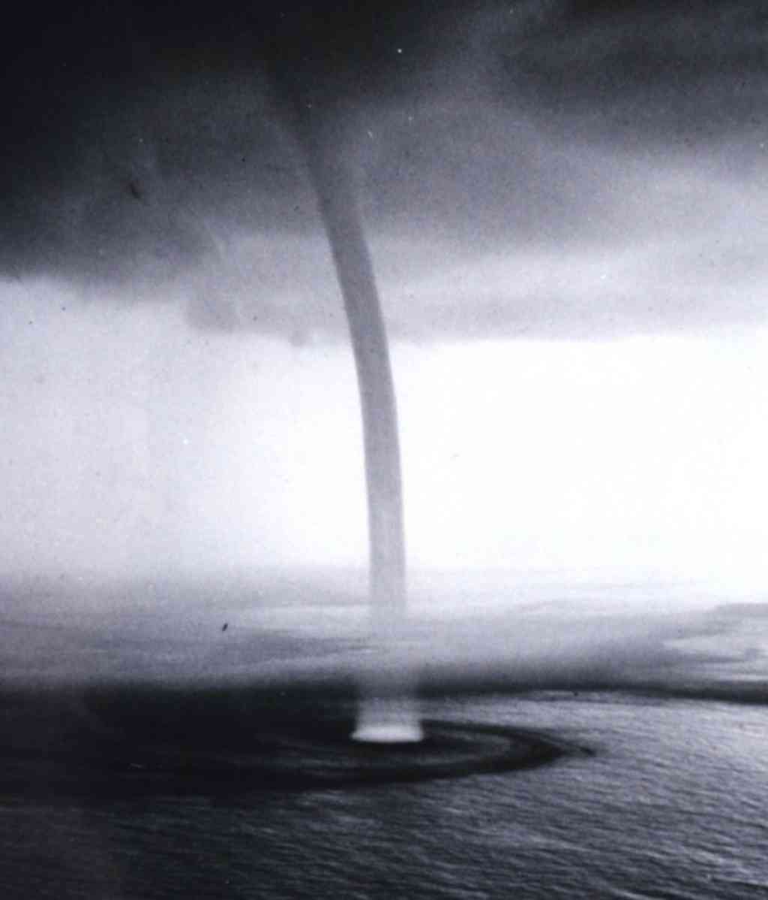

Welcome to my website. I am a theoretical astrophysicist and machine-learning practitioner,
who studies neutron stars, some of the most exciting objects in our Universe.
Neutron stars are stellar remnants that form in the supernova explosions of massive stars. Each
of these objects contains a mass comparable to that of our Sun within a radius of about ten
kilometres and exhibits extreme gravity, high densities, fast rotation and large magnetic
fields.
Such conditions cannot be recreated on Earth, making neutron stars amazing cosmic
laboratories to study matter under extreme conditions.
The extreme nature of neutron stars requires us to combine knowledge from many scientific areas to
understand their fascinating properties. As a result, my work crosses traditional discipline
boundaries.
In particular, I focus on the interface of condensed-matter physics and astrophysics as well as the
connections between astronomy and artificial intelligence. More details can be found here:
One of the most exciting aspects of neutron stars is that quantum mechanics strongly influences
their interiors. To better understand this behaviour, I study macroscopic quantum condensates
in neutron-star interiors.
Like the Earth, neutron stars are composed of distinct layers. They have a solid crust and a fluid
interior that contain neutrons, protons, electrons and possibly exotic particles. In terms of their
high densities, neutron stars are very cold, giving the protons and neutrons the special ability to
flow without friction: The charged protons form a so-called superconductor, whereas
the neutrons are referred to as a superfluid.
These two are exotic versions of quantum states observed in condensed-matter experiments on Earth.
From their laboratory counterparts, we know that superconductors and superfluids create
vortices that can be envisaged as tiny, rapidly rotating tornadoes. These small
structures interact with their surroundings, affecting the large-scale dynamics of the star.

Vortices can be envisaged as tiny, rapidly rotating tornadoes.
Image credit: NOAA Photo Library
I research different approaches to include these small-scale effects into theoretical
models of neutron stars.
Using techniques that are well-known from standard
magnetohydrodynamics, I have for example studied the evolution of the magnetic field in the interior
of superconducting neutron stars. I have also presented novel ways that low-temperature laboratory
experiments could be used to make progress in understanding neutron star astrophysics. I am
currently working with condensed-matter experts to explore these analogies further.
Furthermore, I have been analysing how coupling processes in the interior affect the star's response
after a so-called glitch. These sudden spin-ups interrupt the regular spin-down of
pulsars and are thought to be a macroscopic
manifestation of superfluidity. By connecting the physics on different length scales, I developed
predictive models of the glitch rise, showing that assumptions about the microphysics of
vortices crucially affect the star's rotational behaviour. Comparing my predictions to
the first pulse-to-pulse glitch observations, reported by Palfreyman et al. (2018), I
derived constraints on the strength of the frictional mechanisms in the star's interior. An improved
analysis of the data, revealing novel details about the internal components of the star, was
published in Nature Astronomy.
Using techniques well-known from the study of laboratory superconductors, so-called Ginzburg-Landau
models, I have also been exploring the microscale characteristics of the superconducting protons in
the neutron star core. Their properties are poorly understood but could significantly impact the
stellar magnetism and are thus crucial to understanding the macroscopic magnetic field properties of
compact objects. By adapting the Ginzburg-Landau description to the neutron-star interior and
connecting it with realistic superfluid parameters and equations of state, my collaborators and I
have constructed superconducting phase diagrams and found that the outer core of
neutron stars exhibits so-called type-1.5 superconductivity, rather than type-II
superconductivity as generally assumed. We are currently exploring the impact this new state has
on astrophysical observables.
Astronomy has seen extensive investments in the past decade that have led to the development of
new telescope facilities that take data across the entire electromagnetic spectrum, detect
gravitational waves as well as neutrinos. Neutron stars are the primary targets for such
multi-messenger observations. However, the large data volumes make it increasingly difficult to
analyse these data by hand. For several upcoming observatories, this will become impossible
all together. The astronomy community is, therefore, exploring new scientific approaches.
This is where artificial intelligence (AI) techniques such as machine learning
come in. Machine learning is an AI implementation that allows systems
to automatically improve and learn from previous experiences without being explicitly told how to do
so. They are, thus, ideal to analyse large and complex astronomical datasets.
In particular, I have been using machine learning in the field of neutron-star
population synthesis.
Although about a billion neutron stars are expected to exist in our own galaxy, observational
constraints limit us to only detecting a small fraction of them; we only know around 3,500 of
these compact objects to date. To overcome this gap, we use population synthesis
to model the full population theoretically. Based on our current knowledge of input physics,
these approaches focus on simulating synthetic neutron-star populations. Once the simulated samples
are created, I compare these to real observations using machine-learning techniques to identify
discrepancies and subsequently adjust our theoretical models. This global approach allows us to
constrain the input physics and learn more about neutron-star properties.
Artist impression of a neutron star and its magnetic field.
Image credit: ESO/L.Calçada
In a proof of concept study, the MAGNESIA
population synthesis team explored the possibility of inferring the properties of the Galactic
neutron-star population through deep learning. In particular, we focused on their
dynamical characteristics and showed that convolutional neural networks are able
to accurately estimate the parameters, which control the positions of synthetic pulsars.
Our analysis also highlighted the need for increasing the sample of known neutron stars and
accurately
classifying them, which is one of the main science drivers for the upcoming
Square Kilometer Array.
Recently, I led a study that applied so-called simulation-based inference (SBI) in
the context of neutron stars for the first time. We used this new machine-learning technique to
infer the parameters that control the magnetic and rotational properties of radio-emitting neutron
stars. SBI is crucial for population synthesis as our simulation framework is too complex to use
standard Bayesian inference tools, such as Markov chain Monte Carlo. We specifically used a
method called neural posterior estimation and successfully trained deep neural
networks to infer posterior distributions. This work will form the basis for future multi-wavelength
analyses of Galactic neutron-stars that are currently ongoing.
A full list of papers can be found on the online databases
ADS,
arXiv or ORCID.
A few selected publications are given below.
J. R. Fuentes and V. Graber, Superfluid Spin-up: 3D Simulations of Postglitch
Dynamics in Neutron Stars Cores, Astrophys. J., 974, 300 (2024)
V. Graber, M. Ronchi, C. Pardo-Araujo, and N. Rea, Isolated pulsar population
synthesis with simulation-based inference, Astrophys. J., 968, 16 (2024)
S. Ascenzi, V. Graber, and N. Rea, Neutron-star Measurements in the
Multi-messenger Era, Astroparticle Phys., 158, 102935 (2024)
M. Ronchi, N. Rea, V. Graber, and N. Hurley-Walker, Long-period pulsars as
evidence of supernova fallback accretion, Astrophys. J., 934, 184 (2022)
T. S. Wood and V. Graber, Superconducting phases in neutron star cores,
Univ. 8, 228 (2022)
M. Ronchi, V. Graber, A. Garcia-Garcia, J. A. Pons, and N. Rea, Analyzing the
Galactic pulsar population with machine learning, Astrophys. J., 916, 100 (2021)
G. Ashton, P. D. Lasky, V. Graber, and J. Palfreyman, Rotational evolution of
the Vela pulsar during the 2016 glitch, Nature Astron., 3, 1143 (2019)
V. Graber, A. Cumming, and N. Andersson, Glitch rises as a test for rapid
superfluid coupling in neutron stars, Astrophys. J., 865, 23 (2018)
V. Graber, N. Andersson, and M. Hogg, Neutron stars in the laboratory,
Intern. J. Mod. Phys. D, 26, 1730015 (2017)
V. Graber, N. Andersson, K. Glampedakis, and S. K. Lander, Magnetic field
evolution in superconducting neutron stars, Mon. Not. Roy. Astron. Soc., 453,
671 (2015)
I have presented my research at a large number of international conferences and given many
invited colloquia and seminars over the years. Details are shown below.
Click on the folder icons to download the respective slides.
September 2024, Pulsar glitches: a quick primer and some new results,
Extreme Matter in Extreme Stars Workshop, Leiden, Netherlands
September 2024, Superfluid spin-up: 3D simulations of post-glitch dynamics in
neutron star cores, SPINS-UK Meeting, Southampton, UK
July 2024, Long-period radio beacons: how they challenge our understanding of pulsar
evolution, General Meeting, Spanish Astronomical Society, Granada, Spain
July 2024, The impact of the EoS on superconducting phases in neutron star
cores, QNP2024, Barcelona, Spain
June 2024, Neutron star population synthesis: an overview and new results,
XMM-Newton 2024 Science Workshop, Madrid, Spain
November 2023, Simulation-based inference for pulsar population synthesis,
SPINS-UK Meeting, Oxford, UK
November 2023, Simulation-based inference for pulsar population synthesis,
Astrophysics Seminar, Centre for Astrophysics Research, University of Hertfordshire,
Hatfield, UK
November 2023, Simulation-based inference for pulsar population synthesis,
Astrophysics Seminar, Eberhard Karls University, Tübingen, Germany
October 2023, Neutron Stars: Astrophysical Superfluids, Geo/Astrophysical
Fluid Dynamics Seminar University of Colorado Boulder, US (online)
June 2023, Seminar,
Royal Holloway, University of London, Egham, UK (online)
May 2023, Simulation-based inference for pulsar population synthesis,
Astrophysics Seminar, University of East Anglia, Norwich, UK
Jan 2023, Populations of Neutron Stars,
Institute of Space Sciences Strategy Retreat, Montserrat, Spain
Click on the folder icons to download the respective slides.
July 2022, Seminar, Newcastle University, Newcastle, UK (online)
June 2022, Pulsar population synthesis with multi-modal machine learning, EAS
Annual Meeting, Valencia, Spain
June 2021, Magnetic field distributions in superconducting neutron stars, EAS
Annual Meeting, Leiden, Netherlands (online)
May 2021, Analyzing the Galactic pulsar distribution with machine learning,
Journal Club, CAMK, Warsaw, Poland (online)
March 2021, Superconducting phases in neutron star interiors, Hadronic,
Nuclear and Atomic Physics Group Seminar, University of Barcelona, Barcelona, Spain
(online)
November 2020, Superconducting phases in neutron star cores, Neutron Star
Group Meeting, University of Southampton, Southampton, UK (online)
November 2020, The superfluid neutron star interior, Webinar, Fluids ECR
Forum, University of Leeds, Leeds, UK (online)
November 2020, Neutron stars: Cosmic superfluids and superconductors, Pizza
Seminar, Institute of Space Sciences (ICE-CSIC, IEEC), Barcelona, Spain (online)
November 2020, Neutron stars: Cosmic superfluids and superconductors, Seminar,
Stony Brook University, New York, US (online)
July 2020, Neutron stars: Cosmic superfluids, Colloquium, Research Training
Group "Models of Gravity", Oldenburg, Germany (online)
June 2020, Neutron stars: Cosmic superfluids, Seminar, IRAP, Toulouse,
France (online)
March 2020, Superconducting phases in a two-component microscale model of neutron star
cores, Annual PHAROS Conference, Patras, Greece (cancelled due to Covid-19)
February 2020, Neutron stars as cosmic laboratories, Physics Colloquium, Texas
A&M Commerce, Texas, US
Click on the folder icons to download the respective slides.
November 2019, Neutron stars: Macroscopic quantum systems, MAGNESIA Kick-Off
Meeting, Institute of Space Sciences (ICE-CSIC, IEEC), Barcelona, Spain
November 2019, Neutron stars: Macroscopic quantum systems, MAGNESIA Kick-Off
Meeting, Institute of Space Sciences (ICE-CSIC, IEEC), Barcelona, Spain
April 2019, Crust superfluidity - Implications for macroscopic hydrodynamics,
ICONS - Investigating crusts of neutron stars, JINA - CEE Workshop, University of Amsterdam, Amsterdam,
Netherlands
April 2019, Probing neutron star physics in the laboratory, Quantum
turbulence: cold atoms, heavy ions, and neutron stars, INT Workshop, University of Washington,
Seattle, US
January 2019, Neutron stars as cosmic laboratories, Mini-Symposium, Goethe
University, Frankfurt, Germany
November 2018, Neutron stars - Astrophysical superfluids, Astrophysics
Colloquium, Swinburne University, Melbourne, Australia
November 2018, Neutron stars as cosmic laboratories, Astrophysics Colloquium,
University of Melbourne, Melbourne, Australia
November 2018, Using neutron stars as cosmic laboratories, GW Group Meeting,
Monash University, Melbourne, Australia
July 2018, Glitch rises as a test for rapid superfluid coupling, COSPAR 42nd
Assembly, Pasadena, California
April 2018, Probing neutron star physics in the laboratory, Superfluid
Seminar, Newcastle University, Newcastle, UK
April 2018, The superconducting state in neutron star interiors, MHD Seminar,
Durham University, Durham, UK
April 2018, Rapid crust coupling and glitch rises in superfluid neutron stars,
PHAROS WG2 Meeting, CAMK, Warsaw, Poland
Click on the folder icons to download the respective slides.
November 2017, Mutual friction in neutron star crusts, JINA - INT Workshop,
University of Washington, Washington, US
November 2017, Neutron stars in the laboratory, Condensed Matter &
Astrophysics Seminar, Northwestern University, Illinois, US
November 2017, Neutron stars in the laboratory, Physics Colloquium, Kent State
University, Ohio, US
October 2017, Physics of superfluid neutron stars - Growth of the superconducting
phase, New Perspectives on Neutron Star Interiors, ECT* Workshop, Trento, Italy
May 2017, Fluxtube dynamics in neutron star cores - Implications for magnetic field
evolution, SMFNS2017 - 5th International Symposium on Strong Electromagnetic Fields and
Neutron Stars, Havana, Cuba
June 2015, Magnetic field evolution in superconducting neutron stars, Annual
NewCompStar Conference, Budapest, Hungary
April 2015, Magnetic field evolution in superconducting neutron stars,
BritGrav 15, Birmingham, UK
January 2015, Magnetic field evolution in superconducting neutron stars,
Observations & Theory in the Dynamics of Neutron Stars, ECT* Workshop, Trento, Italy
March 2014, Theoretical neutron star modelling - A closer look at vortex
dynamics, BritGrav 14, Cambridge, UK
April 2012, Dynamics of superfluid neutron stars, GR & Relativistic
Astrophysics Seminar, Eberhard Karls Universität, Tübingen, Germany
Sometimes, scientists are lucky for their research to make it into the news. Find below links to
a selection of articles covering research I was involved with.
From February to September 2024, I taught a range of modules as part of the MSc in Data
Science programme at the University of Hertfordshire. The course covers a wide range
of data-science and machine-learning topics and offers the opportunity for work placements or
research projects. More information on the programme is available here.
I taught the undergraduate module PHYS 434 Optics during the 2019 Winter term at McGill
University. Below you can find general information on the course as well as the lecture notes, I
created.
Classes started on Monday, January 7 and took place every Monday and Wednesday
from 2:35 pm to 3:55 pm in the Rutherford Physics Building Room RPHYS
114. General information about the course, teaching assistants and an overview of the
course content, prerequisites, evaluation and reading materials can be found in the
syllabus.
Individual lecture topics, assigned reading materials and important dates are given in the course
calendar.
Note that both were subject to change throughout the term.
LECTURE NOTES:
PART I – Electromagnetism and Light Propagation
PART II – Geometric Optics
PART III – Superposition, Polarisation and Interference
PART IV – Diffraction, Fourier Optics and Modern Optics
From 2021 to 2023, I taught part of the course Neutron Stars, Black Holes and
Gravitational Waves, one of the modules of the Postgraduate Program in High Energy
Physics, Astrophysics & Cosmology at the Universitat Autònoma de Barcelona. Some general
information on the degree is available here. Below
you can find a few more details on the course as well as the lecture notes, I created.
The NSs, BHs and GWs course was coordinated by Dr Daniele Viganò and taught by several
researchers from the Institute of Space Sciences. The module introduces a range of topics related
to compact objects, and I covered the subjects of black hole theory and gravitational wave theory
over the course of a week in the February of each year.
LECTURE NOTES:
PART I – Towards General Relativity
PART II – Einstein's Theory of Gravity
PART III – Black Holes
PART IV – Gravitational Waves
Exercise
Below you can download the slides, I created for a range of guest lectures.
July 2020, Neutron stars - Extraordinary cosmic laboratories, SEDS Celestia
(Astronomy & Astrophysics Club, BITS Pilani - K. K. Birla Goa Campus), Goa, India
(online)
October 2018, Supermassive black holes, compact binaries and accretion, PHYS
521 Astrophysics, McGill University, Montreal, Canada
March 2017, Superfluids and neutron stars, PHYS 432 Physics of Fluids, McGill
University, Montreal, Canada
The Centre for Research in Astrophysics of Quebec (CRAQ) hosted its annual summer school in June
2019 in Montreal. The topic was Stellar Astrophysics, and I covered Neutron
Stars during the Stellar Death section.
General information about the summer school can be found here. My presentation
slides and a Jupyter notebook to calculate mass-radius relations for two
simple neutron-star model equations of state can be downloaded below.
In July 2021, the Institute of Space Sciences hosted its 4th annual summer school. The school was
dedicated to Artificial Intelligence for Astronomy, and I joined as one of the
host lecturers and co-organisers.
General information about the summer school, which took place remotely from July 12 to July 16, can
be found here. Together with my fellow
host lecturers Helena Domínguez-Sánchez and Alessandro Patruno, as well as several external
lecturers, we covered a wide range of topics related to Machine Learning in general as well as Deep
Learning and its numerous applications.
In particular, I gave an introductory theory lecture on the topic of Deep Learning and Neural
Networks and ran a hands-on session, where I introduced the scikit-learn Python
library for machine learning and looked at a few examples of clustering algorithms
(specifically k-means and Gaussian Mixture Models). Lecture slides and a notebook for the coding
session can be accessed below.
Communicating science and engaging the general public is one of our important responsibilities as
scientists. Showing that science can be fun and relatable is a part of my work that I greatly
enjoy.
I love talking about science and sharing what I know about astronomy and astrophysics with an
interested audience. In April 2022, I was interviewed for the German language Astronomy and Space
Science podcast raumzeit. Our conversation about the
fascinating topic of neutron stars, which was published in October 2022, can be found here. Almost two
hours long, but there is still a lot more to learn.
While working as a postdoctoral fellow at the McGill Space Institute in Montreal, I was part of the
AstroMcGill outreach team. We
regularly hosted Astronomy on Tap, a worldwide initiative combining your two
favourite things: astronomy and beer. In September 2017, I had fun talking about 'Neutron stars - a
space oddity' .
In December 2018, I gave the monthly public lecture jointly organised by AstroMcGill and PhysicsMatters, the McGill Physics Outreach
group. My Public AstroPhysicsNight talk was titled 'Neutron Stars: Extraordinary
Cosmic Laboratories for Physicists' and provided a
non-specialist introduction to my research (no equations, I promise). You can watch a recording
of the lecture here.
In July 2020, I contributed to the Faszination Astronomie Online initiative
organised by the Haus der Astronomie. The Haus der Astronomie, which
translates to 'House of Astronomy', is a Centre for Astronomy Education and Outreach in Heidelberg,
Germany, that runs events for the general public, as well as workshops for students, teachers, and
science communicators. In response to the Covid-19 pandemic, the centre moved its German public talk series online and has
been regularly streaming about fascinating astronomy topics on its own YouTube-channel. My thirty
minute-long talk on pulsar glitches, titled 'Wenn Neutronensterne Schluckauf haben' , can be
viewed here.
For NASA's
Universe of Learning, I presented a general overview of magnetic fields in neutron
stars, the strongest fields we know of, in October 2020. These science briefings are
professional learning telecons for the informal science education community, run in partnership with
NASA’s Museum & Informal Education Alliance. The monthly events highlight current NASA astrophysics
explorations and discoveries from across NASA's astrophysics missions. More information about the
event can be found
here.
In addition to making scientific content more accessible to the general public, I have also
participated at events that aim to make scientists themselves more relatable. One great way of
achieving this is via storytelling, and in November 2018, I performed in front of an amazing
audience at a Science Story Slam hosted by Broad
Science and Confabulation.
In October 2018, I visited a secondary school in Tuttlingen, Germany, to tell the
students about the wonders of the solar system and answer all their questions about what it means to
be a scientist. We also played a game called 'Moon or Frying Pan' (an idea first
spotted here). Try it out! It's actually a
lot harder than it seems, but the kids loved it.
Two examples from the game 'Moon or Frying Pan'. Image credit: Christopher Jonassen/NASA.
While working in Montreal, I volunteered for the Inquiry Institute. The project aims to connect
physicists with Montreal school teachers to introduce educators to simple
experiments that can be repeated in the classroom and specifically highlight the importance of
critical and structural thinking. We, for example, worked on a demonstration that
combines a hula-hoop with painted table tennis balls to illustrate the concepts of moon phases and
solar eclipses; a set-up that has proven useful in explaining how to encourage pupils to ask
critical questions.
In general, demonstrations are an excellent way to get people of all ages interested in science. I
have been involved in constructing simple hands-on experiments for open days and
public events that help to illustrate complex physical concepts. A few examples that have proven
particularly successful over the years:
Visualising gravity using a lycra sheet and round objects of different masses.
Combining an old trampoline, striped lycra fabric and marbles of different masses provides a
fantastic set-up to visualise the concepts of gravity and space-time.
Wave propagation, reflection and interference can be playfully illustrated using a `jelly
baby wave machine'. To build your own, you need jelly babies, duct tape and kebab
sticks. Idea first spotted here.
Following the first direct detection of gravitational waves, I constructed a table-top Michelson
interferometer (my all-time favourite physics experiment) to visualise the concepts
employed by interferometric gravitational wave detectors. I followed
instructions provided by the LIGO outreach
team.
Explaining the concept of waves with a `jelly baby wave machine'.
In February 2021, I joined the 100tífiques
initiative, organised by the Fundació Catalana per a la Recerca i la Innovació (FCRI) and the
Barcelona Institute for Science and Technology (BIST), in collaboration with the Department of
Education of the Generalitat de Catalunya. The event connects female researchers from different
disciplines with high schools in Catalonia to promote positive female role models and scientific
career paths. For the event, held online in 2021, I spoke to 200 students at Col·legi Reial Monestir
de Santa Isabel about how I became a scientist and what I work on. The slides for my talk are
available here .
In August 2017, the AstroMcGill
outreach team organised a public event for several thousand people at the McGill University campus
to view a partial solar eclipse. Seeing so many people excited about astronomy was
an amazing experience.
Besides participating in outreach events in person, I occasionally write for blogs
that focus on different topics related to science and academia. You can, for example, read an
interview with me about the importance of women in research here. If
you are interested in learning more about my experience at the 69th Nobel Laureate Meeting dedicated to Physics, which
I participated at in the summer of 2019, you can read a post I wrote here.
One aspect of the Lindau Meeting is a poster exhibition, where a pre-selected group
of thirty young scientists has the chance to present their research to a general audience. I was one
of the lucky participants and my poster won
the shared first prize by public vote of all the meeting attendees.
The Canadian delegation of young scientists at #LINO19 with the Canadian Nobel
Laureates Arthur McDonald and Donna Strickland. Photo credit: Patrick Kunkel/Lindau Nobel
Laureate Meetings.
From March to August 2021, I worked as a scientific advisor for the short filmPulsars:
A tale of cosmic clocks, which highlights the work of Dame Jocelyn Bell Burnell, her discovery
of pulsars and the importance of female role models. The movie won the first prize for short films
at the Science
in Action 2022 competition.
Before my time at Royal Holloway, I was a Senior Lecturer in Data Science in the Department of Physics, Astronomy and Mathematics at the University of
Hertfordshire, UK. From 2022 to early 2024, I was a Juan de la Cierva Incorporación Postdoctoral Fellow at
the Institute of Space Sciences (ICE-CSIC) in Barcelona, Spain,
studying magnetic fields in superconducting neutron stars. From 2020 to 2024,
I also worked as a senior postdoctoral researcher with Nanda Rea and others at ICE on the ERC
project MAGNESIA, leading the
pulsar population synthesis working group.
Before moving to Spain, I was a research fellow at the McGill
Space Institute (now the Trottier Space Institute) at McGill University in Montreal, Canada,
where I worked with Andrew Cumming and Vicky Kaspi on a range of neutron star
problems. Before moving to Canada, I completed my PhD in the Gravity Group
within Applied Mathematics at the University of Southampton, UK, under the supervision
of Nils Andersson. Moreover,
I have a physics Diplom (MPhys) from the Eberhard Karls Universität Tübingen, Germany,
where I was part of the
Theoretical Astrophysics Group headed by Kostas Kokkotas.
The first 18 years of my life, I was lucky enough to be living by Lake Constance in the South of
Germany. Having seen many beautiful places over the years, I can say that the Swabian Sea (as
the lake is often nicknamed) is one of the most magnificent spots I have been to, and I try to go
back as often as possible.
Mailing address:
Centre for Astrophysics Research
Department of Physics, Astronomy and Mathematics
University of Hertfordshire
Hatfield, Hertfordshire, AL10 9AB
United Kingdom


 arXiv
arXiv ORCID
ORCID